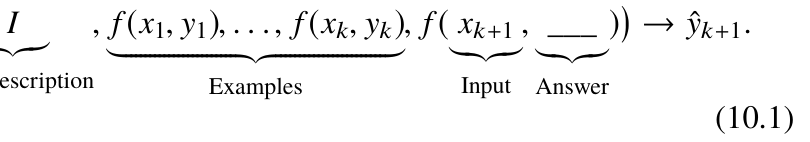
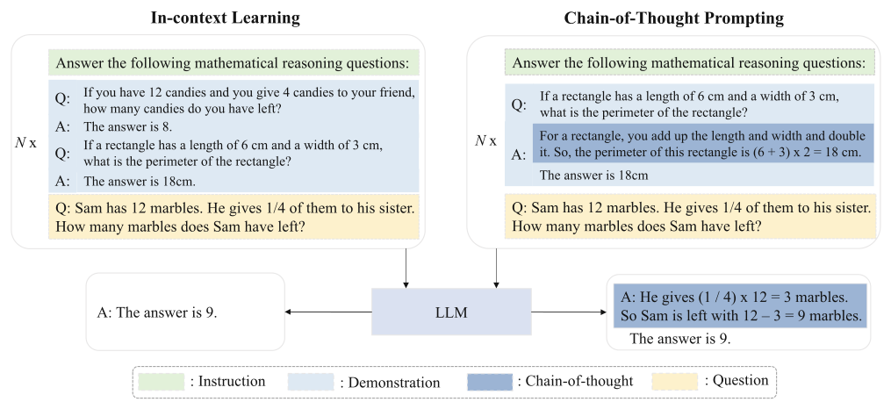
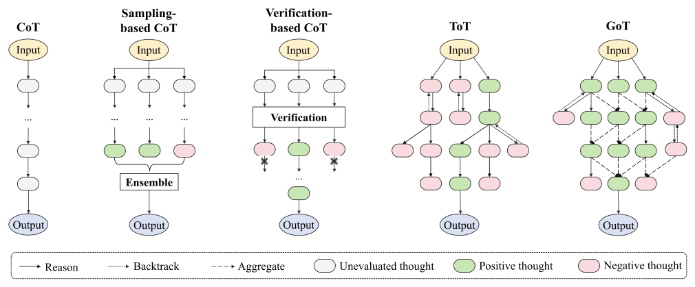
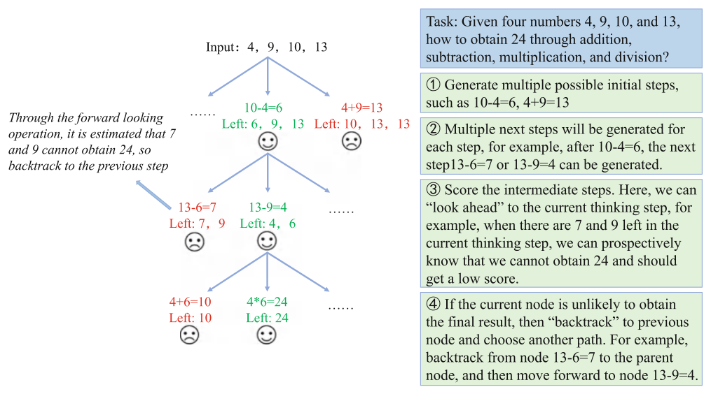
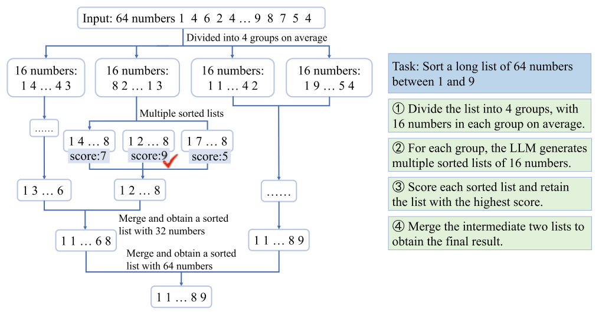
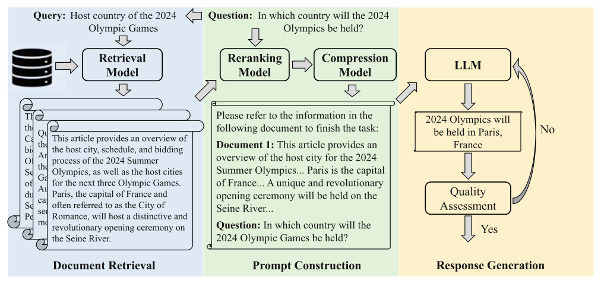

Chapter 10Prompt Engineering
Abstract This chapter focuses on prompt engineering, a crucial technique for effectively using large language models (LLMs) to solve practical tasks. It explores various strategies for designing prompts, including manual and automatic prompt optimization. Manual prompt design involves four key elements: task description, input data, context information, and prompt strategy, ensuring that prompts are clear, structured, and effective. Additionally, automatic prompt optimization is explored through discrete and continuous methods, including reinforcement learning, gradient-based approaches, and LLM-generated prompts. Strategies such as in-context learning (ICL), which incorporates task examples into prompts, and chain-of-thought (CoT) prompting, which guides models through step-by-step reasoning, are discussed in detail. Advanced strategies such as tree-of-thought (ToT) and graph-of-thought (GoT) extend CoT by introducing structured reasoning frameworks to improve complex problem-solving. The chapter highlights the importance of demonstration design, formatting, ordering, and model-friendly prompts in maximizing LLM performance. Finally, it also examines retrieval-augmented generation (RAG), which enhances prompt responses by incorporating external information.
In general, this chapter provides a comprehensive overview of the fundamental approaches to leveraging LLMs via prompting.
Following pre-training and post-training, this chapter will explore how to use large language models (LLMs) to solve practical tasks. The primary approach involves designing effective task prompts and interacting with the model via a natural language interface (see Sect. 10.1). Existing research generally utilizes two strategies for prompt design: manual creation and automatic optimization. To address new tasks effectively, one common approach is in-context learning (ICL), which incorporates task descriptions and demonstrations directly into the prompt as natural language text (see Sect. 10.2). Chain-of-thought (CoT) prompting further enhances complex reasoning by adding intermediate
steps to the prompt (see Sect. 10.3). Additionally, retrieval-augmented generation (RAG), a specialized prompting technique, introduces relevant information from external sources into the prompt to improve task-specific generation (see Sect. 10.4).
10.1Basic Prompt#
Due to the high cost of fine-tuning, natural language prompting methods have become the primary approach for LLMs to solve downstream tasks. To enhance task performance, effective prompts can be developed through either manual design or automatic optimization. This section provides a detailed overview of both approaches.
10.1.1Manual Prompt Design#
The process of designing effective prompts for specific tasks is known as prompt engineering.
This subsection will first outline key elements that compose a prompt, followed by essential principles of manual prompt design, along with practical suggestions and examples.
Key Elements
In general, manual prompt design for language models needs to consider four key elements, namely task description, input data, context information, and prompt strategy. The following will introduce these four key elements in detail.
- Task description. The task description provides specific instructions for language models to follow. Users should generally use clear and precise expressions to describe the task goal. For certain tasks, more detailed instructions on input or output format regarding input or output format may be necessary. Keywords or special symbols can also be used to emphasize particular requirements, guiding the model to complete the task more effectively. Task description for question answering: Please answer the question based on the article separated by three hash signs (###). If the answer cannot be found in the article, please answer “Unable to find the answer.” Task description for code completion: You are a programmer. Given a piece of code, your goal is to complete this code to ensure that it can implement the described function. Task description for conversational recommendation: Recommend 10 items that match the user’s preferences. The recommendation list can include items mentioned in the dialogue box before. The format of the recommendation list is: item ID title (year). Please do not mention anything other than the title of the item in the recommendation list. Example 10.1 Examples of task description by manual prompt design
- Input data. Users can describe input data directly using natural language. For specialized input formats, appropriate methods should be used to ensure compatibility with language models. For instance, structured data (such as knowledge graphs or tables) can be converted into readable text sequences using linearization techniques [267]. Additionally, since structured data is well-organized, it can be stored and represented with data structures in code, with attributes (e.g., graph nodes) represented as variables. Code-based representations of structured data can then be accurately processed using external tools, such as program executors. Linearized table data: ### Student ID Name Score # 01278 Zhang San 89.0 # 03813 Li Si 92.5 # 06714 Wang Wu 79.0 ### Graph data in code format: Graph[name=“Knowledge-Graph”]{ entity_list=[“James Cameron”, “Ontario”, ...], triple_list=[(“James Cameron” -> “Ontario”)[relation=“born in"], ...], } Example 10.2 Example of input data in manual prompt design
- Context information. In addition to the task description and input data, context information is crucial for certain tasks. For instance, search engines can retrieve reference documents for open-ended question answering tasks, which can then be added to prompts as context information (see Sect. 10.4) for language models. When incorporating external information, proper formatting is essential to maximize its effectiveness for the model. Furthermore, in-context learning (see Sect. 10.2) through task demonstrations enhances the model’s ability to handle complex tasks, as it learns task objectives, output formats, and input-output mappings from these demonstrations. Answering questions based on task examples: Example question: Roger has 5 tennis balls, and he bought 2 cans of tennis balls, each can has 3 tennis balls. How many tennis balls does he have now? Example answer: Roger initially had 5 balls, and bought 2 cans of tennis balls, each can has 3 tennis balls, which is 6 tennis balls. 5 + 6 = 11. The answer is 11. User input: There are 16 balls in the bag, half of which are golf balls, and half of all the golf balls are blue. How many blue golf balls are there? Model output: There are 16 balls in the bag, half of which are golf balls. So there are 16 / 2 = 8 golf balls. Half of the golf balls are blue. So there are 8 / 2 = 4 blue golf balls. The answer is 4. Example 10.3 Example of context information in manual prompt design (gray text represents model-generated results)
- Prompt strategy. Designing effective prompt strategies is essential for enhancing a language model’s ability to address specific tasks. In some cases, adding particular prefixes or suffixes can guide the model in handling complex tasks. For example, using the prefix “Let’s think step by step” can encourage step-by-step reasoning, while “You are an expert in this task (or this field)” can boost performance in specific tasks or domains. Additionally, for conversational models (e.g., ChatGPT), prompts can be broken down into multiple sub-task prompts and presented in a multi-turn dialogue format, leveraging their training on extensive dialogue data. Solving math problems: User input: There are 16 balls in the bag, half of which are golf balls, and half of all golf balls are blue. How many blue golf balls are there? Model output: Let’s think step by step. There are a total of 16 balls in the bag, half of which are golf balls, that is, there are 8 golf balls. Half of all golf balls are blue, which means there are 4 blue golf balls. Recommending tourist attractions: User input: You are a travel guide. I will tell you my location, and you need to recommend nearby tourist attractions to me. My first request is “I am in Istanbul, and I only want to visit museums.” Model output: Of course, here are some museums you might consider visiting: 1. Istanbul Archaeological Museum: This museum is located in Sultanahmet Square and is one of the most important archaeological museums in Turkey. It displays precious artifacts from different historical periods, including art from the ancient Near East, ancient Greece, and ancient Rome. 2. Istanbul Museum of Modern Art: Located in the Karaköy district by the Bosphorus Strait, this museum is dedicated to showcasing contemporary Turkish and international art. It boasts a rich permanent collection and temporary exhibitions, covering fields such as painting, sculpture, photography, video art, and installation art. 3. Hagia Sophia Museum: This museum is located inside the Hagia Sophia Cathedral in the historical center of Istanbul, displaying art and artifacts from the Byzantine and Ottoman Empire periods. Here you can admire the magnificent Byzantine architecture and murals, as well as numerous historical artifacts. Example 10.4 Example of prompt strategy in manual prompt design Design Principles Based on the above four key elements, the following part summarizes four basic principles of prompt design, which overall help to design more effective task prompts.
- Clearly express the task goal. Ambiguous task descriptions can lead to inaccurate responses from the model. Therefore, clear and explicit instructions are essential when using language models. The task description should be precise and detailed, including key information such as the task goal, input/output data (e.g., “Given a long document, generate a concise summary”), and any response constraints (e.g., “The summary should not exceed 50 words”). A clear task description helps the model better understand the task and produce the desired output. Suggestions (Clearly Express the Task Goal) Make your prompt as detailed as possible , e.g., “Summarize the article into a short paragraph within 50 words. The major storyline and conclusion should be included, and the unimportant details can be omitted.” It is helpful to let the LLM know that it is an expert with a prefixed prompt , e.g., “You are a sophisticated expert in the domain of computer science.” Tell the model more what it should do , but not what it should not do. To avoid the LLM to generate too long output, you can just use the prompt: “Question: Short Answer:”. Besides, you can also use the following suffixes, “in a or a few words,” “in one of two sentences.” If you want LLMs to provide the score for a text, it is necessary to provide a detailed description about the scoring standard with examples as reference. For few-shot chain-of-thought prompting, you can also use the prompt “Let’s think step-by-step,” and the few-shot examples should be separated by “\.n” instead of full stop. The prompt should be self-contained, and better not include pronouns (e.g., it and they) in the context. When using LLMs for comparing two or more examples, the order affects the performance a lot. Before the prompt, assigning a role for the LLM is useful to help it better fulfill the following task instruction, e.g., “I want you to act as a lawyer”. For multi-choice questions, it is useful to constrain the output space of the LLM. You can use a more detailed explanation or just imposing constraints on the logits. For sorting-based tasks (e.g., recommendation), instead of directly outputting the complete text of each item after sorting, one can assign indicators (e.g., ABCD) to the unsorted items and instruct the LLMs to directly output the sorted indicators.
- Break down into simple and detailed subtasks. The purpose of this principle is to break down a complex task into several relatively independent yet interconnected subtasks, each addressing a specific aspect or step of the original task. For example, subtasks can be listed explicitly and numbered (e.g., “Form a coherent narrative by completing the following steps: 1. ...; 2. ...; 3. ...”). By breaking down complex tasks and handling each subtask in sequence, the model can gradually arrive at the final answer. This strategy reduces the difficulty of solving complex tasks. Suggestions (Break Down into Simple and Detailed Subtasks) For complex tasks, you can clearly describe the required intermediate steps to accomplish it, e.g., “Please answer the question step by step as: Step 1—Decompose the question into several sub-questions, · · · . .” When LLMs generate text according to some context (e.g., making recommendations according to purchase history), instructing them with the explanation about the generated result conditioned on context is helpful to improve the quality of the generated text. An approach similar to tree-of-thoughts but can be done in one prompt: e.g., “Imagine three different experts are answering this question. All experts will write down one step of their thinking, then share it with the group of experts. Then all experts will go on to the next step, etc. If any expert realizes they’re wrong at any point then they leave. The question is ....” As a symbol sequence can typically be divided into multiple segments (e.g., i1, i2, i3. -→.i1, i2. and i2, i3.), the preceding ones can be used as in-context exemplars to guide LLMs to predict the subsequent ones, meanwhile providing historical information. Let the LLM check its outputs before drawing the conclusion, e.g., “Check whether the above solution is correct or not.”
- Provide few-shot demonstrations. As discussed in Sect. 10.2, ICL, adding a few input-output examples (i.e., few-shot demonstrations) of the target task to the prompts, can enhance a language model’s ability to handle complex tasks. Few-shot demonstrations enable the model to learn the semantic mapping between input and output without adjusting its parameters. In practice, high-quality demonstrations tailored to the target task can significantly boost the model’s performance. Suggestions (Provide Few-Shot Demonstrations) Well-formatted in-context exemplars are very useful, especially for producing the outputs with complex formats. For few-shot chain-of-thought prompting, you can also use the prompt “Let’s think step-by-step,” and the few-shot examples should be separated by “\.n” instead of full stop. You can also retrieve similar examples in context to supply the useful task-specific knowledge for LLMs. To retrieve more relevant examples, it is useful to first obtain the answer of the question, and then concatenate it with the question for retrieval. The diversity of the in-context exemplars within the prompt is also useful. If it is not easy to obtain diverse questions, you can also seek to keep the diversity of the solutions for the questions. When using chat-based LLMs, you can decompose in-context exemplars into multi-turn messages, to better match the human-chatbot conversation format. Similarly, you can also decompose the reasoning process of an exemplar into multi-turn conversation. Complex and informative in-context exemplars can help LLMs answer complex questions. As a symbol sequence can typically be divided into multiple segments (e.g., i1, i2, i3. -→.i1, i2. and i2, i3.), the preceding ones can be used as in-context exemplars to guide LLMs to predict the subsequent ones, meanwhile providing historical information. Order matters for in-context exemplars and prompts components. For very long input data, the position of the question (first or last) may also affect the performance. If you cannot obtain the in-context exemplars from existing datasets, an alternative way is to use the zero-shot generated ones from the LLM itself.
- Adopt a model-friendly prompt format. Language models are pre-trained on specially constructed datasets, allowing them to learn a variety of language patterns. When appropriately used, specific language patterns can enhance their task-solving performance. To emphasize certain parts of a prompt, OpenAI’s documentation suggests using special symbols (e.g., ###, triple quotes “““ or ”””, XML tags) to help the model better interpret important content. Additionally, since most LLMs are primarily trained on English text, they typically perform better with English instructions. Non-English users can improve task outcomes by translating instructions into English using machine translation tools before inputting them into the model. Suggestions (Adopt a Model-Friendly Prompt Format) For the question required factual knowledge, it is useful to first retrieve relevant documents via the search engine, and then concatenate them into the prompt as reference. To highlight some important parts in your prompt, please use special marks , e.g., ) and line break (\.n). You can also use both of them for emphasizing, e.g., quotation ( “ ### Complete sqlite SQL query only and with no explanation.\.n #\.n### Sqlite SQL \.n#\.n{table}\.n# {foreign_key}\.n#\.n### {question}\.n tables, with their properties: SELECT ”. You can also retrieve similar examples in context to supply the useful task-specific knowledge for LLMs. To retrieve more relevant examples, it is useful to first obtain the answer of the question, and then concatenate it with the question for retrieval. If the LLM cannot solve the task, you can seek help from external tools by prompting the LLM to manipulate them. In this way, the tools should be encapsulated into callable APIs with detailed description about their functions, to better guide the LLM to utilize the tools. OpenAI models can perform a task better in English than other languages. Thus, it is glish and then feed it to LLMs. useful to first translate the input into En For mathematical reasoning tasks, it is more effective to design specific prompts based on the format of programming language, e.g., “Let’s use python to solve math problems. Here are three examples of how to do it,\.n Q: Olivia has $23. She bought five bagels for $3 each. How much money does she have left?\.n“‘def solution():\.n Olivia has $23. She bought five bagels for $3 each. How much money does she have left?\.n money_initial = 23\.n bagels = 5\.n bagel_cost = 3\.n money_spent = bagels * bagel_cost\.n money_left = money_initial - money_spent\.n result = money_left\.n return result“‘\.n ...... \.n How about this question?\.n Q: ”.
10.1.2Automatic Prompt Optimization#
While manually designed prompts are straightforward, they require substantial effort and demand extensive experience in prompt engineering. Additionally, LLMs are highly sensitive to prompt design, and manually crafted prompts may not always yield optimal results. In some cases, they can even degrade task performance. To address these issues, this subsection introduces automated prompt optimization techniques for both discrete and continuous prompts. It is important to note that, due to the sheer number of parameters in LLMs, optimization techniques may differ significantly from those used in traditional pre-trained models. As a result, some early prompt optimization methods may not be
applicable to LLMs. Nonetheless, for the sake of completeness, this book includes a discussion of these early approaches.
Discrete Prompt Optimization
Discrete prompts are typically full sentences composed of natural language tokens (e.g., “Please answer the following questions based on the provided retrieval information”). However, performing combinatorial search within the discrete token space can be time-consuming and may lead to suboptimal results. The following part presents four common discrete prompt optimization methods aimed at improving both the effectiveness and efficiency of the search process.
- Gradient based methods. These methods optimize the discrete prompt search process by maximizing the model’s likelihood score using gradient update techniques. An early approach, AutoPrompt [268], applied gradient-guided technology by first initializing the prompt as a sequence of “[MASK]” tokens, then iteratively replacing these with tokens from the vocabulary. The change in log-likelihood resulting from each token replacement is used to estimate the gradient, and the best token for each prompt position is obtained through greedy search. However, because this method replaces all candidate tokens and evaluates the gradient at each prompt position, it requires numerous forward and backward passes, making the search process inefficient. To improve efficiency, discrete tokens can be transformed into continuous embeddings (or “soft tokens”) optimized directly using gradients. Each continuous embedding is then mapped to the nearest discrete token in the vocabulary.
- Reinforcement learning-based methods. An alternative approach to improving discrete token selection is to frame the discrete prompt optimization problem as a reinforcement learning task, which is then solved using reinforcement learning algorithms. In this approach, the pre-trained language model serves as the policy model, generating tokens for the prompt sequentially. Once the prompt is generated, the policy model re-ceives a task-specific reward signal, which is used to update the model parameters through reinforcement learning. In practice, different types of reward signals can be employed, such as the consistency score between the ground-truth and predicted labels based on the prompt, or the degree of alignment between the generated text and predefined conditions. During inference, a well-trained policy model can use a greedy search strategy to sequentially generate each token in the task prompt.
- Edit-based methods. These methods primarily focus on editing existing prompts to improve model performance, evaluating prompt effectiveness based on the model’s performance on the target task. They are particularly useful when the model’s internal states (e.g., gradients) are inaccessible, as is the case with API-only models. Typically, editing operations are predefined, and prompts are iteratively modified until reaching the maximum iteration or optimal model performance. As discussed in Sect. 10.1.1, key prompt elements include the task description, input data, context information, and prompt strategy. Accordingly, editing operations can involve modifying the task description, adding or removing in-context demonstrations, and adjusting label mappings (e.g., using “positive/negative” to represent binary classifications). Prompt editing operations can also be customized for specific scenarios to better align with downstream tasks. The overall process is as follows: use predefined editing operations to modify existing prompts, input these new prompts into the model to evaluate performance on the target task, and select the best prompts based on model performance. To reduce the computational overhead during this iterative process, a small set of test samples can be used to assess model performance.
- LLM-based methods. Actually, prompt optimization itself can be treated as a task, which can be further approached by an LLM acting as a prompt generator to create or refine prompts [269, 270]. In this framework, the prompt optimization process is essentially viewed as a black-box optimization problem, guided by the LLM. This framework begins by using a prompt generation model (an LLM designed to generate prompts) to produce a batch of candidate task prompts based on a few in-context demonstrations. Next, the target model (an LLM used for downstream applications) evaluates the performance of each candidate prompt on the target task, using metrics such as perplexity or task accuracy to assess prompt quality. This process can be enhanced through a multi-round optimization strategy based on Monte Carlo search. In each iteration, high-scoring prompts are selected first, and the prompt generation model then generates new prompts similar to these top-performing ones, expanding the candidate set. After completing all iterations, the candidate prompt with the best performance is chosen as the final prompt. However, the method described above does not fully consider the complete history of prompt evolution, which can lead to local optima or oscillations in effectiveness during the prompt search, potentially hindering the generation of optimal prompts. To address this, incorporating previously improved prompts and their associated scores into the optimization process can help guide the model toward generating better prompts. Continuous Prompt Optimization Unlike discrete prompts, continuous prompts are represented as a set of embedding vectors in continuous space, allowing for direct optimization through gradient updates based on downstream task loss. Current research on continuous prompt optimization primarily relies on pre-trained language models and supervised learning methods, while continuous prompts for LLMs have received limited attention. In cases of limited data, transfer learning methods can help address the shortage of labeled data for the target task. The following part will discuss these two methods in detail.
- Supervised learning methods. These methods treat continuous prompt vectors as trainable parameters, optimizing them by minimizing cross-entropy loss based on labeled data from downstream tasks. As discussed in Sect. 7.3, Prefix-tuning [203] incorporates a sequence of prefixes (i.e., a set of trainable continuous vectors) in each Transformer layer of the language model, while Prompt-tuning [204] adds trainable prompt vectors only at the input layer, keeping the model parameters fixed and fine-tuning the continuous prompt vectors. This approach reduces the number of parameters required for training. However, these prompt optimization methods are typically input-independent and may not fully capture the input semantics.
- Transfer learning methods. Supervised learning methods typically require ample training data to develop effective task prompts, making it challenging to achieve good performance in data-scarce scenarios. To address this, prompt-based transfer learning methods first learn continuous prompts shared across several representative source tasks, providing a strong initialization for prompt optimization in target tasks. However, this approach has some limitations, as it applies the same prompt to all instances of the target task, potentially reducing adaptability. To overcome this, task-specific continuous prompts can be learned for each source task, rather than sharing a common prompt. When tackling a target task, mechanisms such as attention can be used to determine relevance weights for each source task prompt, based on the specific instance of the target task. The source prompts are combined in a weighted manner, creating a new, instance-specific prompt (in continuous vector form) to assist the model with the current task instance.
10.2In-Context Learning#
In the GPT-3 paper [20], the OpenAI research team introduced in-context learning (ICL), a specialized prompting method designed to enhance the few-shot learning capabilities of LLMs. ICL is widely used as an effective approach for leveraging LLMs in a range of downstream tasks. This section provides a detailed overview of this method.
10.2.1Formulation of ICL#
According to the description in the GPT-3 paper [20], ICL uses natural language text consisting of task descriptions and/or examples as prompts. Figure 10.1 illustrates the process of constructing prompts for ICL.
First, the target task is described in natural language, and a set of examples is selected from the task dataset as demonstrations. Second, these demonstrations are formatted according to a specific template and arranged to form the prompt. Finally, the test example is added to the prompt, and the entire input is fed into the LLM to generate the output.
Based on the task description and demonstrations, LLMs can recognize and perform new tasks without explicit gradient updates. Formally, we define Dk = { f (x1, y1), . . . , f (xk, yk)}. as demonstrations consisting of k examples, where f (·). is a formatting function that converts task demonstrations into natural language prompts. Given the task description I, demonstrations Dk ., and a new input xk+1., the process of generating an answer ˆyk+1. by the LLM can be expressed by the following formula:

LLM
.
Large Language Model
Task Description
Input
Examples
Answer
ICL is closely related to instruction tuning (see Chap. 7), as both involve converting tasks or examples into natural language prompts for LLMs to process. In the original GPT-3 paper, the authors defined ICL as including a task description and demonstrations, though both are optional. According to this definition, when LLMs solve unseen tasks based solely on task instructions, it can be considered a special case of ICL. The key difference is that instruction tuning involves fine-tuning the LLM, whereas ICL relies on prompts alone to guide task-solving.

10.2.2Demonstration Design#
ICL utilizes demonstration data within prompts, and the selection and design of these demonstrations play a crucial role in the model’s ICL performance. As shown in Eq. 10.1, three key factors in demonstration design need to be considered: demonstration selection, formatting function f (·)., and sorting strategy. The following part will discuss each of these factors in detail.
Demonstration Selection
Demonstration selection is a crucial step in ICL, focused on identifying the informative examples from a candidate pool to improve the task performance of LLMs. Common selection methods include similarity-based, diversity-based, and LLM-based methods, which are described below.
- Similarity-based methods. In practical applications, relevance-ranking methods are widely used for demonstration selection. A common approach is the k-nearest neigh-bors (k-NN) algorithm, which is straightforward to implement and can effectively select demonstrations relevant to the target task instance. Typically, a text embedding model (such as BERT) is first employed to map all candidate samples into a low-dimensional embedding space, where they are ranked by semantic similarity to the test sample. The k closest samples are then chosen as demonstrations for ICL. In practice, this method often outperforms random demonstration selection.
- Diversity-based methods. Although the k-nearest neighbor retrieval algorithm is simple to implement, it typically assesses each sample’s relevance independently, over-looking the overall effectiveness of the demonstration set. To address this, a diversity-based demonstration selection strategy can be employed. This approach aims to select a representative demonstration set, ensuring that the chosen demonstrations capture a broad range of task-relevant information. The selection process should balance both the relevance of each sample to the target task and the diversity of the demonstration set. In practice, heuristic algorithms like maximum margin ranking (MMR) and determinantal point process (DPP) are commonly used to enhance demonstration set diversity.
- LLM-based methods. Another approach is to use an LLM as a scorer to evaluate candidate samples and select the most suitable demonstrations. A straightforward method is to calculate the performance gain of the model when a specific demonstration is added, thereby filtering out less effective examples. However, this requires multiple calculations by LLMs to identify the optimal set. To reduce evaluation overhead, a small set of high- and low-quality demonstrations can first be selected based on the model’s scores. Subsequently, a classifier can then be trained to accurately identify high-quality examples. Overall, it is crucial to ensure that selected demonstrations provide rich task information and maintain high relevance to the test sample [271]. Demonstration Format The demonstration template (i.e., the formatting function f (·). in Eq. 10.1) also impacts the performance of LLMs. Typically, there are two main methods used to construct demonstration formats: manual annotation and automatic generation.
- Manually annotated format. Manual annotation is a common approach to creating high-quality task demonstration formats. It begins by defining the format of the input and (1) Example format that includes input and output: Input: Roger has 5 tennis balls, he bought another 2 cans of tennis balls, each can contains 3 tennis balls. How many tennis balls does he have now? Output: 11. Example template: Question: { Input } Answer: { Output } Specific example: Question: Roger has 5 tennis balls, he bought another 2 cans of tennis balls, each can contains 3 tennis balls. How many tennis balls does he have now? Answer: 11. (2) Example format that includes task description: Input: Roger has 5 tennis balls, he bought another 2 cans of tennis balls, each can contains 3 tennis balls. How many tennis balls does he have now? Output: 11. Example template: Here is a primary school math problem. Question: { Input } Answer: { Output } Specific example: Here is a primary school math problem. Question: Roger has 5 tennis balls, he bought another 2 cans of tennis balls, each can contains 3 tennis balls. How many tennis balls does he have now? Answer: 11. (3) Example format that includes chain of thoughts: Input: Roger has 5 tennis balls, he bought 2 cans of tennis balls, each can has 3 tennis balls. How many tennis balls does he have now? Output: Let’s think step by step. Roger initially had 5 balls, 2 cans each can 3 tennis balls is 6 tennis balls. 5 + 6 = 11. So the answer is 11. Example template: Here is a primary school math problem. Question: { Input } Answer: { Output } Specific example: Here is a primary school math problem. Question: Roger has 5 tennis balls, he bought 2 cans of tennis balls, each can has 3 tennis balls. How many tennis balls does he have now? Answer: Let’s think step by step. Roger initially had 5 balls, 2 cans each can 3 tennis balls is 6 tennis balls. 5 + 6 = 11. So the answer is 11. Example 10.5 Examples of manually annotated demonstration formats output, and then a detailed task description is provided to help LLMs understand the requirements conveyed by the example. Example 10.5 shows a manually annotated format for demonstrations. The simplest demonstration format requires only a clear indication of the input and output, allowing LLMs to infer the semantic relationship between them. Incorporating relevant task descriptions into the prompt can further assist the model, while including a chain of thought in the output can enhance reasoning by demonstrating a step-by-step approach. While manually annotated formats are clear and easy to interpret, they may lack diversity when scaled to a large number of tasks. Please automatically write an instruction based on the input and output: Example Input: Paragraph: This house is surprisingly not constructed very well, and you probably need more money to fix it after you buy it. If you ask me, I would suggest you consider other candidates. Example Output: This house does not seem to be constructed well, so you may need to spend more money to fix it after you purchase it. I would suggest that you look at other properties. Example Instruction: Suggest a better and more professional rephrasing of the following paragraph. Example Input: Application Form: Name:___ Age:___ Sex:___ Example Output: Name: John Doe. Age: 25. Sex: Male Example Instruction: I am looking for a job and I need to fill out an application form. Can you please help me complete it? Example Input: [10, 92, 2, 5, -.4, 92, 5, 101] Example Output: [-.4, 2, 5, 5, 10, 92, 92, 101] Example Instruction: Sort the given list ascendingly. Input: Address: 123 Main Street, City: San Francisco Output: 94105 Instruction: Given an address and city, come up with the zip code. Example 10.6 Examples of automatically generated demonstration formats (gray text indicates model-generated instructions)
- Automatically generated format. To overcome the limitations of manual annotation, LLMs can be used to automatically generate demonstration formats. This approach leverages the ICL ability of LLMs to expand demonstration templates for new tasks. Specifically, a subset of templates is manually annotated to create a seed set, which is then input into the LLM. The LLM, using ICL, can generate demonstration templates for new tasks. These templates are then reviewed and refined to ensure they meet the task requirements. Example 10.6 shows how LLMs automatically produce demonstration formats from a small set of manually annotated templates. By providing input, output, and instructions for the initial examples, the model can generate corresponding instructions for new tasks based on their inputs and outputs. Demonstration Order Since LLMs often exhibit position bias in ICL, they are highly sensitive to the order of demonstrations. Therefore, it is essential to design an effective demonstration order to enhance the model’s ICL performance. This process typically consists of two steps: generating candidate demonstration orders and evaluating their effectiveness.
- Generate candidate demonstration orders. The first step is to generate candidate orders for the selected demonstrations. A simple approach is to randomly permute the demonstrations; however, this can introduce high variance and lead to unstable model performance. Since LLMs often prioritize information presented later in the prompt, an alternative method is to sort the demonstrations based on their semantic similarity to the test sample, placing the most similar demonstrations closest to it. This strategy can help the model better leverage semantically related demonstrations during inference, thereby improving performance.
- Evaluate candidate demonstration orders. Once the demonstration order is established, the next step is to evaluate its effectiveness. If test set samples are available, the LLM’s performance with the current demonstration order can be directly assessed, yielding a score for that order. In the absence of test samples, additional validation sets may need to be created for evaluation. An alternative evaluation method, which does not require test data, involves measuring the model’s prediction uncertainty. Specifically, the entropy of the LLM’s prediction distribution for a given demonstration order can be calculated, with lower entropy being preferred. Lower entropy indicates a more concentrated prediction distribution, signifying greater model confidence.
10.2.3Underlying Mechanism#
ICL is a key capability of LLMs. While traditional machine learning includes example-based methods, such as k-nearest neighbor classifiers, these approaches have more limited applicability. In contrast, LLMs learn from task demonstrations through prompts, enabling a broader scope of capabilities. This subsection explores two key topics related to ICL: how the training phase affects its effectiveness and how LLMs support the ICL mechanism during inference.
The Impact of the Training Phase on ICL Ability
During the training phase, two key factors primarily influence the effectiveness of ICL: the design of training tasks and the selection of training data.
- Training tasks. The concept of ICL was first introduced in the GPT-3 paper [20], which demonstrated experimentally that ICL ability improves with model size. With advancements in pre-training techniques, subsequent research has shown that even smaller models can acquire ICL abilities through specific training task designs (e.g., predicting labels based on demonstrations and inputs) [272, 273]. This underscores the importance of pre-training task design in fostering ICL capabilities. To achieve this, MetaICL [273] dis-covers that by using meta-training tasks, a model can learn to infer task information from a few samples, thereby enhancing its ICL capability. To achieve this, MetaICL employs a diverse set of NLP tasks as meta-training tasks. For each task, a few samples are selected as demonstrations, while the remaining samples are used for training. Subsequently, the model is then trained to predict the output based on the provided demonstrations and the input sample in an ICL manner. Notably, this approach does not necessarily require a task description within the input; a few demonstrations alone enable the model to understand the target task. As a result, the need for explicit task instructions is effectively bypassed. Furthermore, experimental results show that increasing both the diversity and number of meta-training tasks boosts the model’s ICL ability, highlighting the importance of pre-training tasks in ICL performance.
- Training data. In addition to training tasks, the selection of training data also largely influences a model’s ICL ability, although the impact varies depending on the data types. Research work has shown that combining pre-training data from diverse domains and increasing the variety of the corpus can enhance the ICL capabilities of LLMs [274]. Furthermore, long-range dependencies within the training data are crucial for improving ICL. By concatenating related texts during training, the model can gain a better understanding of semantic relationship between texts, thereby enhancing its ability to learn contextual information [275]. To identify training data that most impacts ICL, researchers calculate the gradient similarity between pre-training data and ICL test data. This process identifies a subset of training data with greater similarity to the test data [276]. Experiments reveal that training data exhibiting high gradient similarity frequently contains a dense concentration of low-frequency, long-tail words, suggesting that exposure to these more complex data can further improve the model’s ICL ability. The Underlying Working Mechanism of ICL During the inference phase, ICL does not involve explicit learning processes or parameter updates; instead, it relies on how LLMs utilize demonstrations to perform ICL. Generally, LLMs utilize demonstration data in two main ways: task recognition and task learning [277]. In the task recognition paradigm, LLMs identify specific tasks by analyzing demonstrations and then apply pre-existing knowledge to solve the test task. In contrast, task learning involves acquiring new knowledge, not encountered during pre-training, from demonstrations to complete tasks. The following part provides a detailed overview of these two approaches.
- Task recognition. LLMs can identify the current task from provided demonstrations and use the extensive prior knowledge accumulated during pre-training to address these Research [278] suggests that latent variables within pre-training data capture tasks. various task-specific information. LLMs can learn and encode these latent variables from demonstrations, allowing them to automatically recognize and adapt to tasks through ICL. Furthermore, studies show that LLMs can extract latent vectors from in-context demonstrations that represent task-specific information. These vectors capture essential details needed to understand the task and show robustness to variations in model input. Guided by the task vector, LLMs can invoke the appropriate task recognition process for new inputs, generating outputs that align with task requirements [279, 280].
- Task learning. The second perspective suggests that LLMs can learn new tasks not encountered during pre-training by using demonstration data. It considers ICL as an implicit fine-tuning process through the lens of gradient descent [281, 282]. Specifically, the ICL mechanism, from an implicit gradient descent perspective, can be broken down into two main steps. First, the LLM generates a meta-gradient (analogous to a gradient in gradient descent, though without explicit computation) for a given demonstration via forward computation. Second, the model’s attention mechanism then functions as a form of implicit gradient descent. This process resembles parameter updates in traditional machine learning but is performed implicitly during forward propagation, removing the need for explicit parameter adjustments. Beyond the gradient descent perspective, ICL can also be viewed as an algorithmic learning process within the model [283]. Specifically, during pre-training, the LLM develops an implicit model through its internal parameters. As a result, during the forward computation phase in ICL, the LLM can use this implicit model to simulate complex learning algorithms, such as decision trees, guided by provided demonstrations. Existing research [277] suggests that LLMs exhibit both task recognition and task learning abilities in ICL. However, the strength of these abilities is closely affected by the parameter scale (or model capacity). Smaller models (e.g., those with 350M parameters) primarily possess basic task recognition capabilities, such as identifying the type and requirements of a given task [277]. In contrast, task learning where the model learns new solutions from demonstrations is generally more evident in large models [277]. To investigate the effects of task recognition and task learning abilities, related studies replace the true labels in demonstrations with either the original classification labels or randomly selected, unrelated symbols [284]. In the first setting, researchers randomly sample demonstration labels from the original label space (e.g., “positive/negative” labels in sentiment analysis tasks), requiring only task recognition for effective task completion. In the second setting, the original labels are replaced with unrelated symbols (e.g., “positive/negative” is replaced with “foo/bar”), preventing the model from relying on prior knowledge and requiring it to learn new label mappings from demonstrations to solve the task. Experimental results show that when unrelated symbols are used as labels, performance decreases less for larger models, indicating that they are better able to analyze demonstrations, learn new label mappings, and effectively complete the task.

10.3Chain-of-Thought Prompting#
Chain-of-thought (CoT) [21, 285] is a widely used prompting strategy designed to improve LLMs’ performance on complex reasoning tasks, such as arithmetic reasoning [286], commonsense reasoning [287], and symbolic reasoning [21]. Unlike prompts
.input, output . pairs, CoT prompts incorporate intermediate reasoning composed solely of
steps to guide the model from input to output. Figure 10.1 illustrates an example of a CoT prompt. This section introduces CoT prompt techniques, related enhancement strategies, and explores the underlying mechanism of CoT reasoning capabilities and their impact on model performance in reasoning tasks.
10.3.1Basic Form of CoT Prompting#
CoT prompting enriches the original input-output relationship by incorporating the
.input, chain of thought, intermediate reasoning process, represented in the triple form:
output . In this way, CoT provides a sequence of semantically coherent, logically related reasoning steps that connect the input to the output. Through CoT prompting, LLMs can generate both intermediate CoT and final answers based on the input. However, creating
.input, output . pairs. Beyond CoT is typically more complex than generating simple
manual annotation, certain prompts can encourage models to generate reasoning steps before answering. For instance, providing thought-inducing instructions like “Let’s think step by step” or “Take a deep breath and work on this problem step by step” prompts the model to sequentially generate CoT and answers, improving accuracy without CoT
demonstrations. The example on the right in Fig. 10.1 shows how the model generates step-by-step reasoning to reach the correct answer through CoT prompting.
10.3.2Enhancement Strategies for CoT Prompting#
While CoT prompting improves LLM’s performance on reasoning tasks, it can also lead to issues such as reasoning errors and prediction instability. To address these, this subsection explores three techniques for improving CoT prompting: enhancing CoT demonstration design, refining the CoT generation process, and expanding the reasoning structures. Figure 10.2 presents the evolution of several CoT prompting strategies. CoT Demonstration Design
When LLMs employ CoT prompting for reasoning, they typically utilize an ICL approach by providing CoT prompts as input demonstrations to the model. The following part introduces two common methods for designing CoT demonstrations within this framework.
- Complicated CoT. The complexity of CoT primarily corresponds to the number of reasoning steps in the reasoning process, with each step typically addressing a subquestion. Using demonstrations with multiple reasoning steps as model prompts increases the likelihood that the model will learn to solve these sub-questions and follow the logical reasoning process, thereby improving performance on complex tasks. In addition to increasing reasoning steps, CoT complexity can be enhanced by extending question length, as longer questions often contain more information and require additional reasoning steps. For datasets lacking manually annotated CoT demonstrations, the longest questions can be selected and manually annotated with CoT to serve as demonstrations. Models trained on these complex CoT demonstrations generally perform better than those trained on randomly selected demonstrations.
- Diversified CoT. In addition to designing more complex CoT demonstrations, incorporating diverse CoT demonstrations in prompts can effectively enhance a model’s reasoning capacity. These diverse demonstrations expose the model to a wider range of potentially feasible reasoning approaches and structures. To select diverse CoT demonstrations, clustering algorithms like k-means can partition questions in the training set into k clusters (where k is the desired number of demonstrations), ensuring similarity within clusters and distinctiveness between clusters. From each cluster, a representative question is selected based on its proximity to the centroid and adherence to specific heuristic rules. This question is then input to the language model to generate the corresponding CoT and answer. Since each question originates from a different cluster, this method ensures diversity among demonstrations. Experiments show that, although the CoT demonstrations generated by the model may contain errors, increasing the diversity of demonstrations can reduce the impact of these errors on model performance [288]. CoT Generation Method Since LLMs may produce reasoning errors and unstable predictions when generating CoTs, it is also important to improve the CoT generation process itself. This part introduces two approaches for enhancing CoT generation: sampling-based methods and verification-based methods.
- Sampling-based methods. When reasoning with a single chain of thought, LLMs are prone to producing incorrect answers if errors occur in intermediate steps. To mitigate this, multiple reasoning paths can be sampled to reduce prediction instability. For example, the self-consistency method [289] prompts the model to generate multiple reasoning paths and corresponding answers (as illustrated in Fig. 10.2). The model then aggregates these candidate answers, selecting the most frequent one as the final output. In some cases, a weighted average based on answer confidence can be applied. This approach, which generates multiple reasoning paths from a single prompt, can be further enhanced by using multiple prompts to create even more diverse reasoning paths. Sampling-based CoT generation is not only easy to implement but also outperforms single CoT generation on various tasks.
- Verification-based methods. The sequential nature of CoT can lead to error propagation or accumulation in the reasoning process. To address this, a specially trained verifier or the LLM itself can assess the accuracy of generated reasoning steps. The DI- VERSE method [290] exemplifies this approach by training verifiers to evaluate both the full reasoning path and individual intermediate steps, allowing for evaluations at different levels of detail. For the full-path verifier, a dataset of question-answer pairs is used for constructing the training data. Specifically, each question is input into the language model, which generates a reasoning path and final answer via CoT prompting. If the model’s

answer matches the annotated answer, it is labeled as a positive example; otherwise, it is labeled as a negative example. A binary classifier is then trained on these
.question, CoT, answer . pairs to score reasoning paths. Similarly, an intermediate-step verifier can be trained to assess the correctness of individual reasoning steps, although constructing positive and negative examples for these steps is more complex than for full paths. A simplified approach is as follows: for each question, multiple reasoning paths are generated through sampling. If a path results in the correct answer, all intermediate steps within it are labeled as positive examples. For incorrect paths, steps that match those in the correct path are labeled as positive; otherwise, they are labeled as negative. This annotated data is then used to train a binary classifier to score the model’s intermediate steps.
Extended Reasoning Structures
Although basic CoT prompts have broad applicability, their linear reasoning structure is limited in handling many complex tasks, particularly those requiring foresight or backtracking. To overcome these limitations, CoT structures can be expanded to enhance reasoning capabilities.
- Tree-structured reasoning. As a direct extension, a hierarchical tree structure can facilitate the exploration of possible solutions by representing the reasoning process as a tree-based search structure. The tree-of-thought (ToT) approach leverages this structure for reasoning [291, 292]. In ToT, each node represents a reasoning step, and edges between nodes indicate transitions between steps. Unlike CoT, which generates a single next step from each node, ToT allows for multiple branches. If a reasoning step does not yield the correct answer, the model can backtrack to a previous node and explore an alternative path. Figure 10.3 illustrates the ToT method applied to solve the 24-point game.1 Steps ① and ② mirror the reasoning process of CoT, with the main differences arising in steps ③ and ④. In the CoT approach, verification of the reasoning path occurs only at the final step. If an error is found, the reasoning must start over, which significantly reduces efficiency. In contrast, ToT allows the model to evaluate the likelihood of achieving the correct answer at each node (e.g., step ③) by assigning a confidence score. In this manner, within the search algorithm at step ④, paths unlikely to lead to the correct answer (nodes with lower scores) can be pruned early, while high-scoring paths are prioritized for the next reasoning step.
- Graph-structured reasoning. Compared to tree structures, graph structures can represent more complex topologies, supporting intricate reasoning relationships. Graph-of-thought (GoT) [293, 294] is a representative approach that applies graph structures to reasoning. In GoT, the reasoning process is modeled as a graph where nodes represent intermediate reasoning steps of LLMs, and edges denote dependencies between these steps. Unlike tree structures, which restrict connections to parent-child relationships, GoT allows connections between any nodes. This flexibility enables the evaluation of multiple reasoning paths while generating new intermediate steps. Figure 10.4 illustrates the GoT approach by solving a long array sorting problem with repeated numbers (0–9). Using simple prompts, LLMs can’t effectively solve long array sorting problems. In contrast, GoT begins by dividing the input array into four groups, sorts each group individually, and then merges the results. Unlike the ToT approach, which permits only forward search and backtracking among child nodes, GoT allows interactions between child nodes, facilitating the flexible creation of new intermediate steps for further reasoning. For clarity, Fig. 10.2 compares the reasoning structures of CoT, ToT, and GoT. 1Given 4 numbers, the task is to achieve 24 using the four basic operations.

10.3.3Further Discussion on CoT#
CoT is a powerful prompting technique that significantly enhances the performance of LLMs on complex tasks. This subsection examines the origins of CoT reasoning capabilities during training and their impact on model performance during inference to elucidate the underlying working mechanism.
- The origin of CoT reasoning ability. Understanding the mechanisms underlying CoT involves investigating the fundamental principles of model reasoning, which poses significant research challenges. Prior work [295] suggests that CoT effectiveness stems from overlapping, interdependent clusters of variables within the training data, such as topics, concepts, and keywords. This indicates that even if two variables do not co-occur in the training data, they may still be associated through a sequence of overlapping intermediate variables. To test this hypothesis, researchers constructed a Bayesian network with a chain structure to generate training samples containing numerous overlapping variable clusters. They then trained a language model to predict the conditional probability of one variable given another. Results indicated that when two variables rarely co-occur in the data, the model’s predicted conditional probabilities deviated significantly from the true probabilities; however, incorporating intermediate variables reduced this deviation. Another line of research [296] examined CoT reasoning from a function learning perspective, suggesting that complex reasoning tasks resemble composite functions. In this view, CoT reasoning divides the learning process into two main stages: information focusing and ICL. During the information-focusing stage, the language model concentrates on intermediate reasoning steps within CoT prompts. In the ICL stage, it generates reasoning steps based on this focused information, iterating this process to reach the final solution. Both theoretical and experimental results indicate that information focusing reduces ICL complexity by highlighting relevant reasoning information, while ICL allows the model to capture complex functions that standard prompting cannot effectively achieve.
- The impact of CoT prompts on model inference. To investigate how CoT prompts affect model inference, researchers incorporate local perturbations to CoT prompts and then examine the resulting changes in model behavior. Specifically, prior studies [297] divide CoT prompts into two kinds of components: symbols (e.g., numbers in math problems and entities in commonsense questions) and patterns (e.g., formulas in math and sentence structures in commonsense questions) to assess their individual effects on inference. Experimental results suggest that symbols and patterns primarily serve to convey task intention, with the accuracy of specific content being less critical; what matters most is their relevance to the question and logical coherence in the inference process [298]. In certain mathematical reasoning tasks using few-shot learning, the correctness of formulas in CoT has very little impact on model performance; instead, symbols and patterns primarily serve to clarify task goals. Researchers suggest that CoT functions as an enhanced ICL method: for highly complex tasks, basic prompts may not sufficiently convey task intentions, whereas CoT prompts can facilitate clearer expression of task intention. Some recent studies [299] show that even without CoT prompts, model performance improves if the generated text includes an explicit reasoning process. Specifically, when generating the first token, the method samples the top k tokens with the highest probability and continues decoding until it produces k potential text sequences. Candidate outputs that include reasoning paths are significantly more likely to yield correct answers, highlighting the importance of intermediate reasoning steps to enhance accuracy.

10.4Retrieval-Augmented Generation#
Due to the limitations of their training data, LLMs may struggle to generate accurate results for real-time information or specialized domain knowledge based solely on their inherent information. To address this, researchers have proposed the retrieval-augmented generation (RAG) technique, which leverages external sources (such as the Internet or domain-specific knowledge bases) to provide the model with timely, domain-relevant knowledge, thereby reducing errors in generated content. This section introduces the basic process of RAG and related optimization strategies.
10.4.1Basic Process of RAG#
Typically, the RAG approach comprises three main stages: document retrieval, prompt construction, and response generation (as illustrated in Fig. 10.5). Each of these stages is described in detail below.
- Document retrieval. The document retrieval stage aims to obtain the relevant documents from existing information sources to address the current input. To achieve efficient retrieval, most approaches construct an index of the candidate document set and employ existing techniques for information retrieval. Existing retrieval methods fall into two main categories: keyword retrieval using sparse vector representation and semantic retrieval using dense vector representation [300]. In the former approach, documents are first tokenized, an inverted index is constructed based on a pre-defined vocabulary, and keyword matching methods are then employed to retrieve relevant documents. In the latter approach, documents are mapped to low-dimensional dense vectors, an efficient index of these vectors is created using the approximate nearest neighbor search algorithm, and then candidate documents are ranked according to vector similarity. Both methods perform well in large-scale document retrieval scenarios, offering low latency and widespread applicability.
- Prompt construction. Once relevant documents are retrieved, they are subsequently integrated into the input prompts of the LLMs, along with task-specific instructions to guide the model in using this information to complete the task. For instance, prompts might instruct, “Please refer to the information in the following documents to complete this task.” Since these documents are often lengthy, simply concatenating them into the prompt may restrict the model’s ability to effectively utilize the information, a challenge known as “lost in the middle” [229]. To address this issue, existing approaches often employ a reranking model to select the most relevant documents from the retrieved results or apply information extraction and text compression techniques to retain only the essential, relevant information, thereby reducing the input context length.
- Response generation. In this stage, the constructed prompts are fed into the LLM, allowing it to leverage the retrieved content to generate improved responses. However, the retrieved documents may include irrelevant information or even content that contradicts the correct answer, potentially affecting the model’s output. To mitigate this, the LLMs can self-assess the quality of its generated results and determine whether an additional retrieval step is necessary [301]. Alternatively, the model can conduct a confidence evaluation to assess whether the retrieval step or the retrieved content is required for the current task [302].
10.4.2Improvement Strategies for RAG#
The previous discussion outlines the general process of the RAG approach. In practical applications, factors such as the quality of the retrieved documents, the design of prompts, and the methods used for response generation can all influence the final outcomes of LLMs. This subsection introduces strategies for enhancing the RAG performance.
Retrieval Enhancement
The documents returned in the retrieval stage, referred to as retrieved documents, provide the LLM with relevant contextual information, and their quality directly impacts the final generation results. Additionally, the retrieval algorithm must ensure efficient performance with low retrieval latency.
The following part introduces the improved methods focused on retrieval sources and query refinement.